香取神宮 大饗祭/千葉県
香取神宮に大饗祭を見に行ってきたよ。
香取神宮とは言わずと知れた全国の香取神社の総本社であり、下総国一宮であり、伊勢、鹿島と共に明治以前に神宮を名乗っていた3社の内のひとつである。
その香取神宮で豪快な神饌（神様へのお供え物）が見られると聞いて来たのだが…
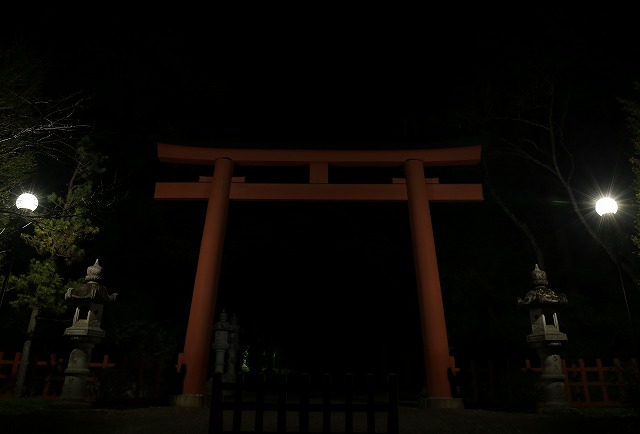
…真っ暗じゃないですか…
祭りは午後6時から。
この時点で午後5時半過ぎ。
11月末ゆえ陽は沈み、すっかり夜モード。
本当にお祭りなどあるんだろうか？ひょっとして日を間違えちゃったのか？
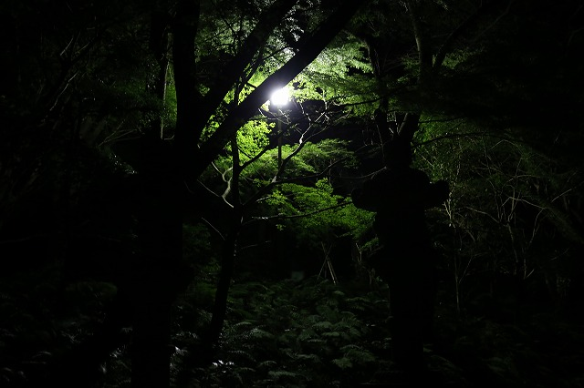
とりあえず参道を進む。
すごーくたまに街灯があるが、基本的に真っ暗。
参道から少し脇に入ったところにある有名な要石も観て行こうと思ったが、遭難しそうなので止めておきました…。
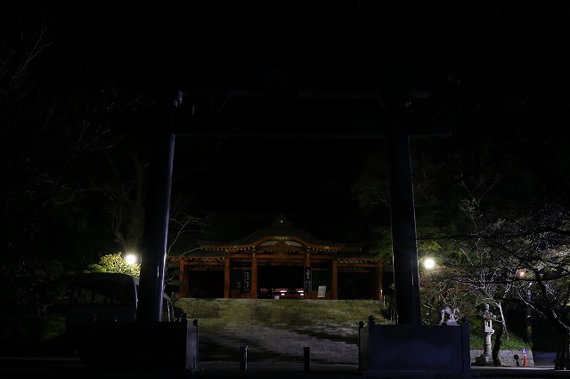
あまりの暗さに心折れそうになる頃、ようやく立派な総門が見えてくる。
灯りもあり、やや安心するも人の気配があるの？ないの？って感じ。
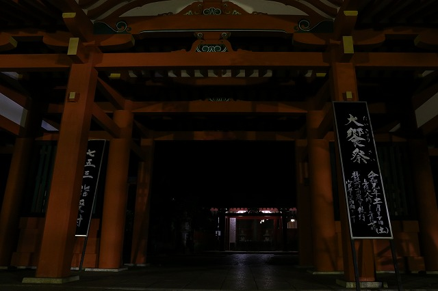
おお、大饗祭の案内板がある。
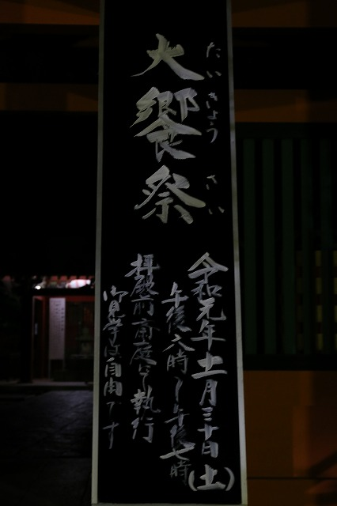
良かった日時は間違ってなかった！
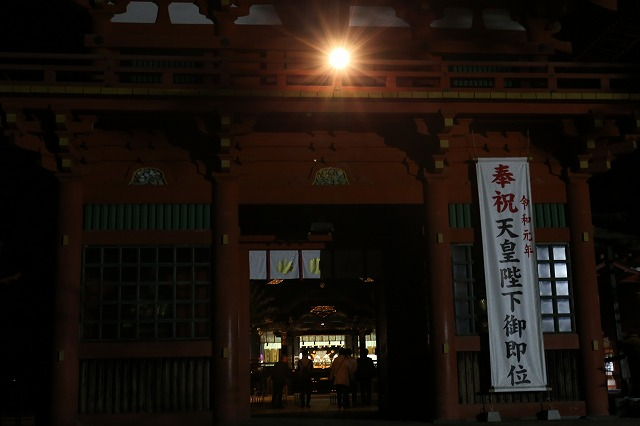
総門を潜り、楼門を抜けると拝殿が見えてくる。
ここに至ってやっと人の気配がしてきた。
おお、良かった。
とはいえ、日本屈指の名刹である香取神宮の祭礼にしては随分静かな祭りだ。
見物客は数十人程度。
それも祭りといえば必ずいるカメラオヤジ（ハイハイ、私もその一味ですよ）は数えるほどしかおらず、どちらかというと近所の人が多い御様子。
屋台も何もなく、思いの外ローカルな祭りだった。
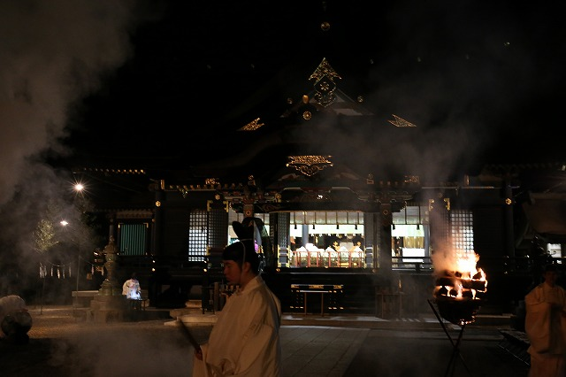
祭りの時間が近づくとアナウンスがあり、祭りの概要と注意事項を説明していた。
この祭りは、祭神である経津主神が関東の神々をねぎらいもてなすための祭りだという。
つまり神様たちの大宴会なわけで、最上級の神饌を並べ奉るのだ。
そうこうするうちに神職の方が火をくべた。
それまで「本当に祭りとかやるんですか？」という感じだったが、かがり火がつくとがぜん「これから神事はじまりますよ！」的なモードに突入する。
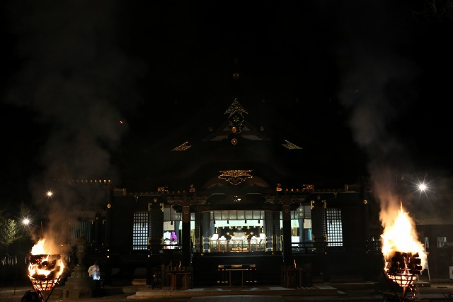
そして厳かに祭りは始まる。
神職の方々が拝殿前に着席する。
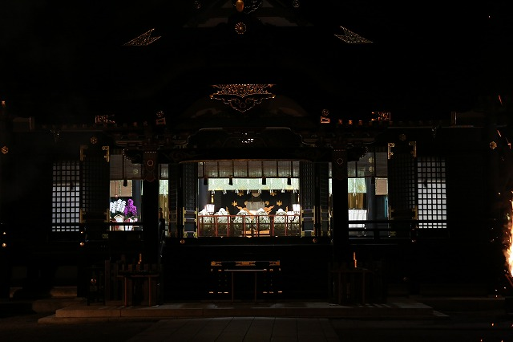
拝殿前はかがり火とわずかな照明だけ。
必然的に明るい拝殿の内部に目が行く。
拝殿内にはすでに巻行器（まきほかい）と呼ばれる独特の入れ物に炊いた米を盛り付けてあるものが並んでいる。
巻行器とはマコモを組んで作ったもので、全部で16個、使用する米は４斗ほどだとか。
昭和16年の神祗院による官国弊社特殊神事調をみてみると当時は５斗7升の米を炊いていたというから今よりも多くの米を使用していた。
さらに明治以前には現在の倍近い33個の巻行器を並べていたという。
これは関東にいる33柱の神々をもてなしたという伝説に即したものと思われる。
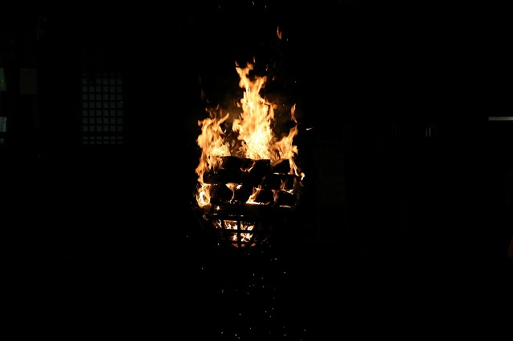
見上げれば真っ暗な夜空に時折成田空港へ発着する飛行機だけが行きかう。
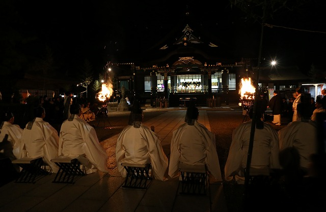
凛とした空気が張り詰めた中、神事は粛々と進む。
神職は十数人、氏子や地元の関係者などが数十人。見物客が数十人。
寒くて暗い中で行われる神事はどこか秘密の祭りのような雰囲気すら感じられる。
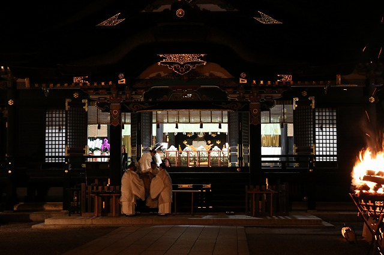
そうこうしているうちにいよいよ神饌が運び込まれてくる。
拝殿向かって左手に神饌殿という建物がある。
ここから神様のおもてなし料理が運ばれてくるのだ。
最初は既に拝殿に並んでいる巻行器、つまり米を追加で数個運び込む。
神職の方々がバケツリレー方式で運んでいる。
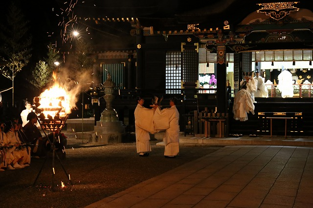
箸や酒が運ばれた後、いよいよメインディッシュのお出ましである。
まずは鴨羽盛。
さばいた鴨の羽を左右に開き、頭を持ち上げ、背中にその内臓を背中に盛り付けたものである。
結構エグいが、カミサマに捧げる最高の御馳走なのだ。
鴨は雄雌一対が奉納されていた。
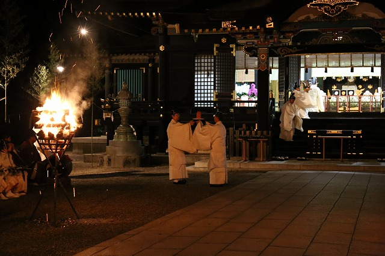
次に鳥羽盛。
これは鳥羽といっても使われているのは鮭の切り身で遠目にもサーモンピンクの塊が確認できる。
その形状は何だか溶けかかったロウソクのようだった。
その後も魚の干物や鮒、野菜や柚子などが次から次へと拝殿に運び込まれる。
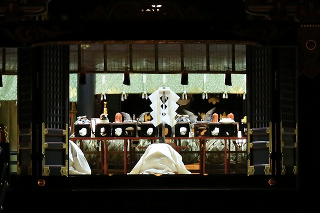
全部運ばれた後、神主が祝詞をあげる。
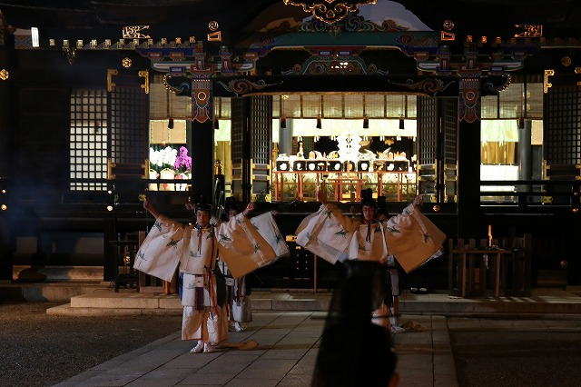
その後、舞が奉納される。
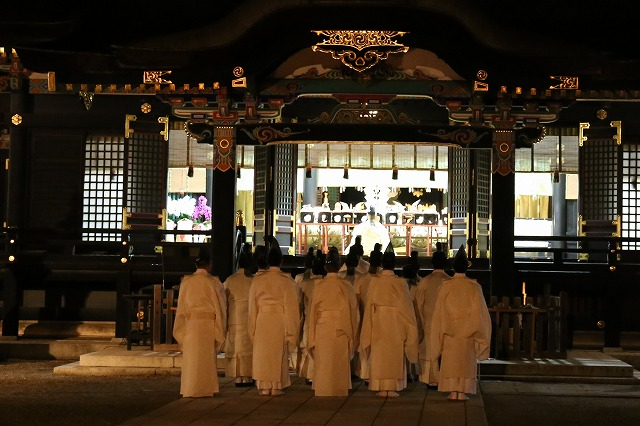
さらに神職全員で神前に祈り祭りは終了となる。
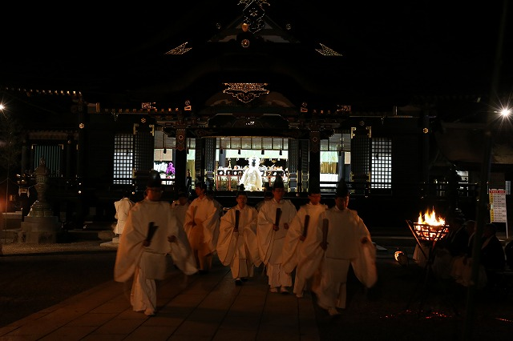
神様の大宴会なんだからさぞかしにぎやかなんでしょ、という雰囲気は全くなく、厳粛にして厳かな祭りであった。
祭りの終了後、短い時間だが見物客も拝殿にあがって神饌を間近で見ることが出来るのだ。
早速お邪魔しますよ。
拝殿にあがると大迫力の神饌の数々が並んでいた。
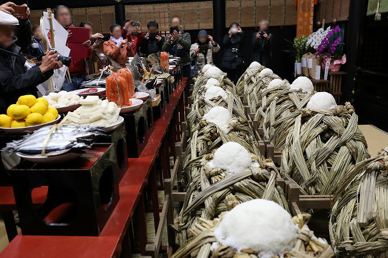
↑右手にあるのがマコモで編んだ巻行器。
神職の方の説明によると米は炊いたというより厳密には茹でた状態に近いそうな。
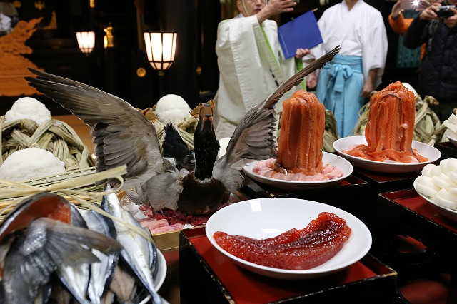
羽を広げた鴨の羽盛。
隣には薄くそいだ鮭の肉を盛り付けた鳥羽盛。
手前に鮭の胎子。
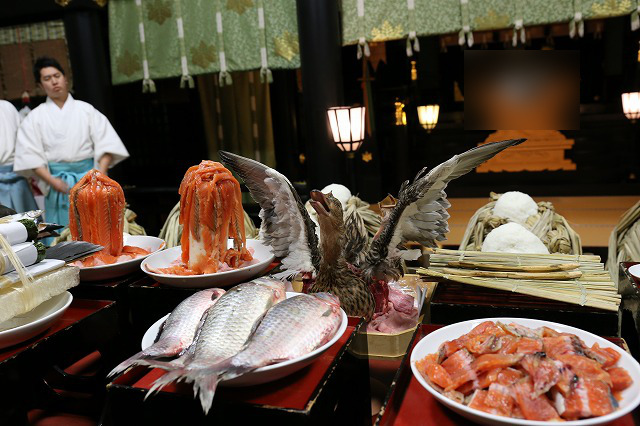
鮭の切身。
鮒。
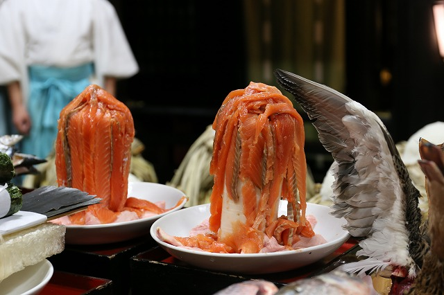
鳥羽盛。
鴨の羽盛よりもこちらの方がインパクトがあった。
何というか生々しいケーキみたいな。
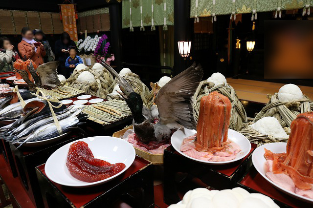
神饌といえば聞こえがいいが、言い換えれば生贄ともいえる。
生々しい神饌を前にギャラリーの皆さんも若干興奮気味。
公開は10分程度といっていたが、それでは収まらない様子だった。
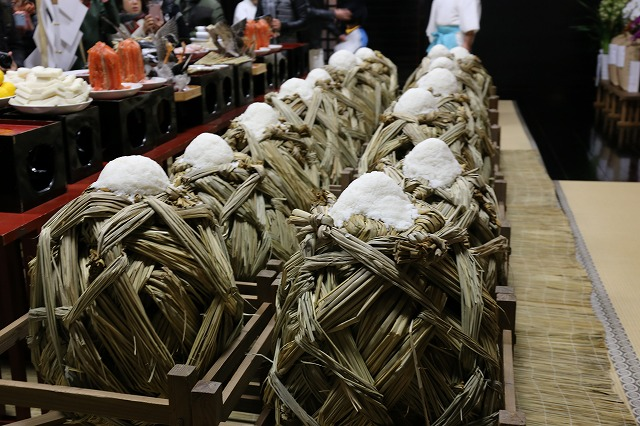
神官の方に聞くと、鴨の羽盛や鮭の鳥羽盛の下に敷いてあるのは鮫の肉だとか。
近海で獲れる鮫なのだそうな。もちろんジョーズみたいなデカい鮫じゃないよ。
香取という場所は利根川の河口近くであり、近くには霞ヶ浦や北浦といった広大な汽水域がある。
かつては鮭の遡上も確認されており、これらの神饌は全てこの地域で獲れるものばかりなのだ。
鴨、鮭、米、真菰、柚子、鮒、鯉、秋刀魚、海苔、酒、大根、牛蒡、里芋、白菜…
こういった海の幸と山の幸をふんだんに盛り付けた神饌で神々をもてなす。
それがこの祭りの最大の特徴であり、この神社の立地的な特徴と言えよう。
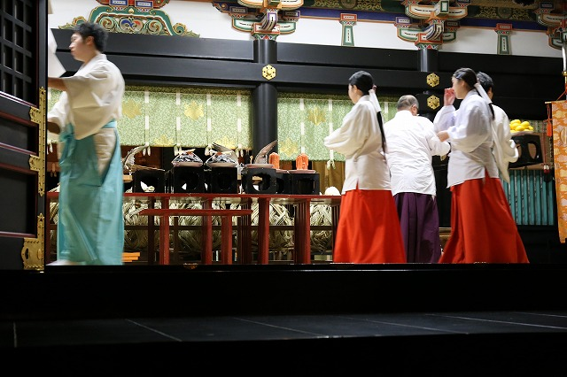
ギャラリーの見学タイムも終わり、神職や巫女が神饌を次々と片付け始める。
この後、関係者の皆さんで召し上がっちゃったりするのかな。
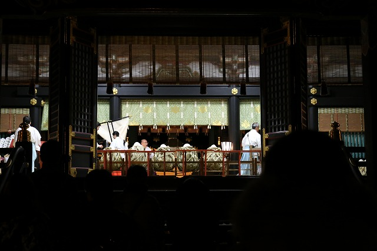
こうして大饗祭は終わり、見物客も帰りはじめる。
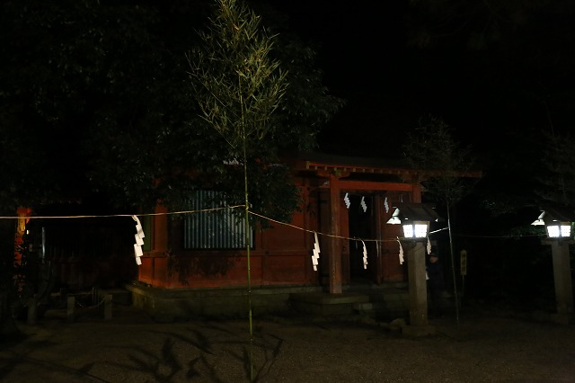
拝殿右手にある神饌殿。
暗くて申し訳ないすね。
祭りの当日朝からここで神職が神饌を「調理」するのだ。
一般的に神社で神饌といえば加工しない状態の食物を奉納するのだが、この大饗祭のようにまれに調理、加工した食物を奉納することがある。
これを特殊神饌という。
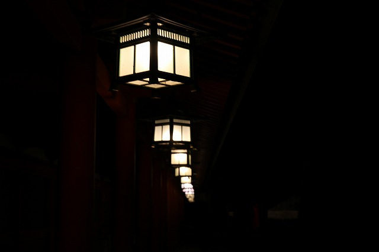
祭りが終わると、照明も次々と消え、徐々に闇が戻って来る。
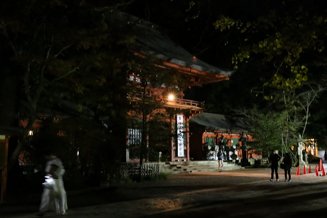
神々の大宴会は思ったよりも厳かだったが、その宴に少しでも参加できたような気がして何だか嬉しかった、ね。
そして帰り道はやっぱり真っ暗でした…。
暗すぎるやろ…。
2019.11.
珍寺大道場 HOME